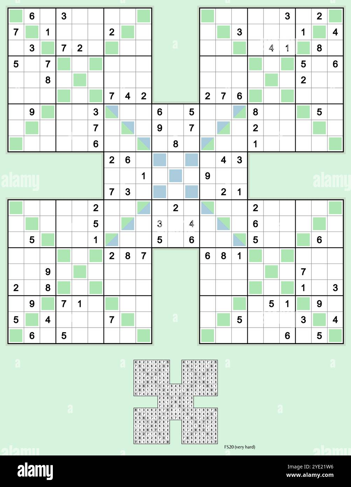

Diagonal:
Criar pontos referência, ou seja, menos campos preenchidos, porém é importante criar mesmo que já tenha.
Croqui mapeavel.
Anotação interna e externa entre quadros como por exemplo:
| 1,3,5 |
1,4,5 |
1,5,8 |
| 2,7,8 |
2,5,8 |
3,58 |
| 1,5,9 |
2,5,8 |
3,58 |
1,2,3,5,7


Verificação de linhas, colunas, diagonais, retângulo exclusivo(são números iguais sem um grupo específico de quadrantes podendo ser de diferentes regiões), cruzamentos...,porém esse nível força uma diagonal com mais evidência.
Ponto referência imaginário, podendo considerar matrizes ou vetores diferentes, conferência nas diagonais
Ponto referência imaginário, podendo considerar matrizes ou vetores diferentes.
Estatística:
(1-9=45)=3x3(matriz/vetor)
45/3=15
45/9=5
Incluir diagonal, exemplo:
100% de chance de ser diagonal.